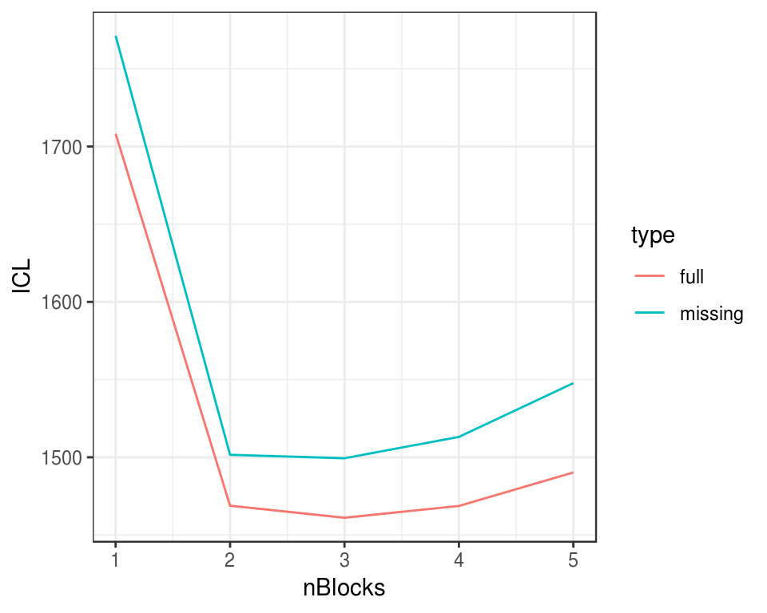

missSBM: a case study with war networks
missSBM team
2019-04-10
Source:vignettes/introduction-to-misssbm.Rmd
introduction-to-misssbm.RmdPrerequesites
On top of missSBM, our analysis will rely on the igraph package for network data manipulation and ggplot2 and magrittr for representation.
The war network
The war_graphs dataset comes with the missSBM package:
This dataset contains a list of two networks (beligerent and alliance) where the nodes are countries; an edge in the network beligerent means that the two countries have been at war at least once between years 1816 to 2007; an edge in network alliance means that the two countries have had a formal alliance between years 1816 to 2012. The network beligerent have less nodes since countries which have not been at war are not considered.
These two networs were extracted from (see Sarkees and Wayman (2010) for war data, and Gibler (2008) for formal alliance).
par(mfrow = c(1,2))
plot(war_graphs$alliance , main = "Alliance")
plot(war_graphs$beligerent , main = "Beligerent")
In the following, we focus on the network beligerent. We extract here the adjacency matrix of the network, a covariate on the vertices describing the military power of each country, and the country names.
beligerent_adjacency <- as_adj(war_graphs$beligerent, sparse = FALSE)
military_power <- get.vertex.attribute(war_graphs$beligerent)$military_power
countries <- get.vertex.attribute(war_graphs$beligerent)$military_powerGenerating missing data
Some data may be missing for some countries in the sense that data were collected comprehensively for a subset of countries and for the other countries we only observe their edges with the first subset and not within them. More precisely, we can assume that the sampling is node-centered and collect edges information accordingly (there will be a block of missing data on the diagonal of the adjacency matrix). To this end we rely on the function sample in missSBM:
sampledNet_war <- missSBM::sample(beligerent_adjacency, sampling = "node", parameters = .8)
plot(sampledNet_war)
Estimation with missing data
We can now adjust a Stochastic Block Model with the function estimate under this type of sampling:
vBlocks <- 1:5
collection_sbm <- missSBM::estimate(sampledNet_war, vBlocks = vBlocks, sampling = "node")
res_unsmoothed <- data.frame(
ICL = collection_sbm$ICL,
nBlocks = vBlocks,
type = "raw"
)The smooth function allows the user to produce a smoothed version of the Integrated Classification Likelihood Criterion, commonly used to perform model selection. This will faciliate the choice of the number of group.
smooth(collection_sbm, "both")
res_smoothed <- data.frame(
ICL = collection_sbm$ICL,
nBlocks = vBlocks,
type = "smoothed"
)Let us now check that the smoothing did its job correctly:
rbind(res_unsmoothed, res_smoothed) %>%
ggplot(aes(x = nBlocks, y = ICL, group = type, color = type)) +
geom_line() + theme_bw()
Estimation on fully observed network
We compare with clusterings obtained with the fully observed network.
collection_sbm_full <-
missSBM::estimate(
sampledNet = prepare_data(beligerent_adjacency),
vBlocks = vBlocks, "node",
clusterInit = "hierarchical"
)
smooth(collection_sbm_full, "both")res_missing <- res_smoothed
res_missing$type <- "missing"
res_full <- data.frame(
ICL = collection_sbm_full$ICL,
nBlocks = vBlocks,
type = "full"
)
rbind(res_missing, res_full) %>%
ggplot(aes(x = nBlocks, y = ICL, group = type, color = type)) +
geom_line() + theme_bw()
table(
collection_sbm$bestModel$fittedSBM$memberships,
collection_sbm_full$bestModel$fittedSBM$memberships
)##
## 1 2 3
## 1 0 73 0
## 2 0 0 6
## 3 9 0 4Taking the covariates into account
We now introduce the covariate military_power into the analysis. We expect a part of the network to be explained by this covariate.
let us first prepare the data for missSBM inference on the full set of data
Then we run the inference on the fully observed network
collection_sbm_cov_full <- estimate(sampleNet_cov, vBlocks = 1:5, sampling = "node")
smooth(collection_sbm_cov_full)We then sampled some observation according to the covariates and try to estimate the SBM with these missing entries.
sampleNet_cov_miss <- missSBM::sample(beligerent_adjacency, sampling = "node", parameters = missSBM:::logistic(.95), covariates = list(military_power))
collection_sbm_cov_miss <- estimate(sampleNet_cov_miss, vBlocks = 1:5, sampling = "node")
smooth(collection_sbm_cov_miss, control = list(iterate = 3))res_full <- data.frame(
ICL = collection_sbm_cov_full$ICL,
nBlocks = vBlocks,
type = "full"
)
res_miss <- data.frame(
ICL = collection_sbm_cov_miss$ICL,
nBlocks = vBlocks,
type = "miss"
)
rbind(res_miss, res_full) %>%
ggplot(aes(x = nBlocks, y = ICL, group = type, color = type)) +
geom_line() + theme_bw()